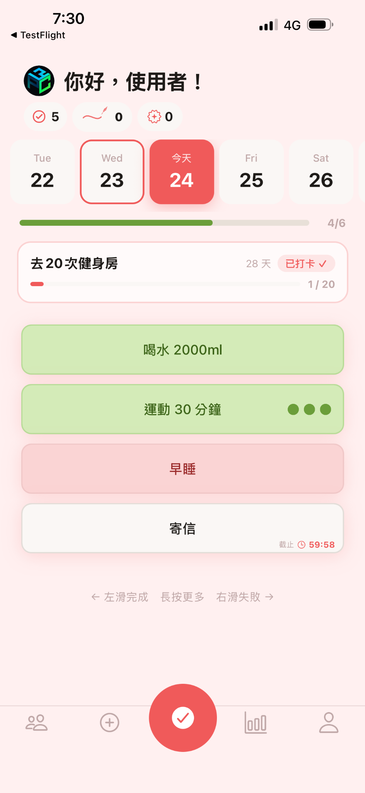
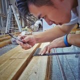
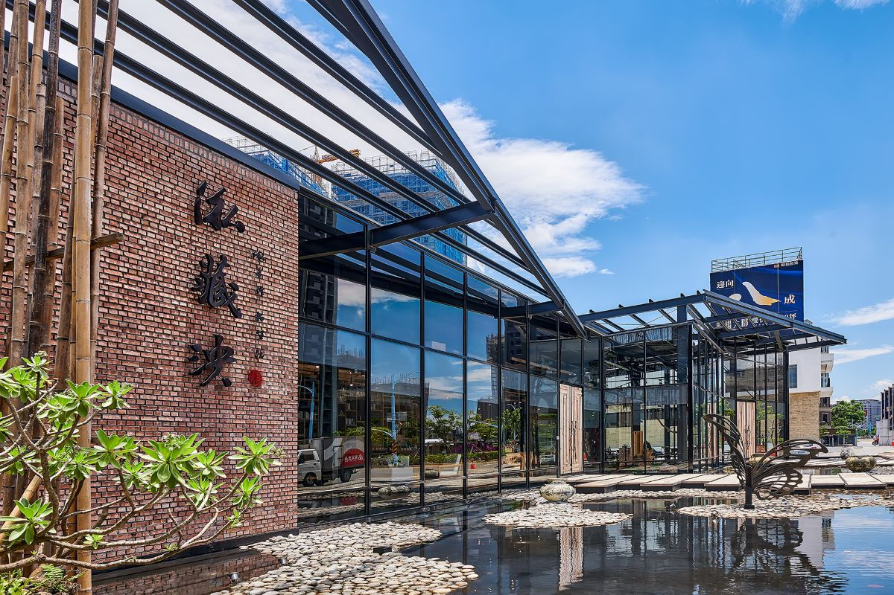
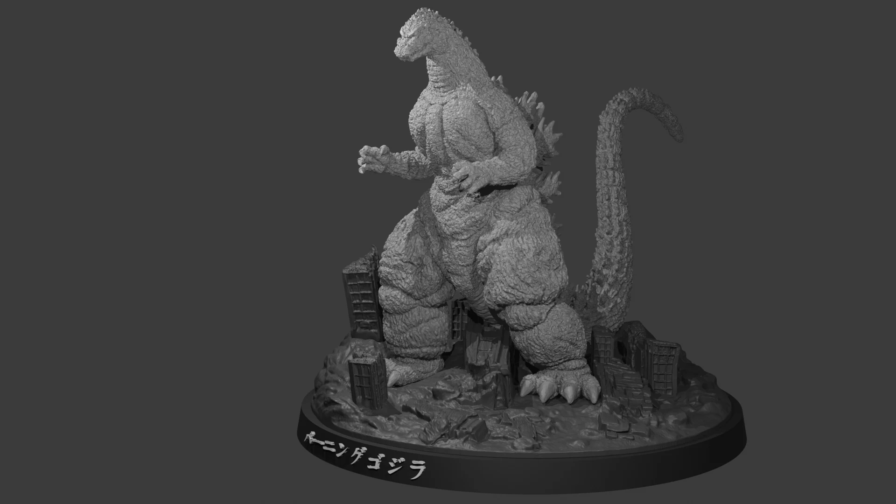
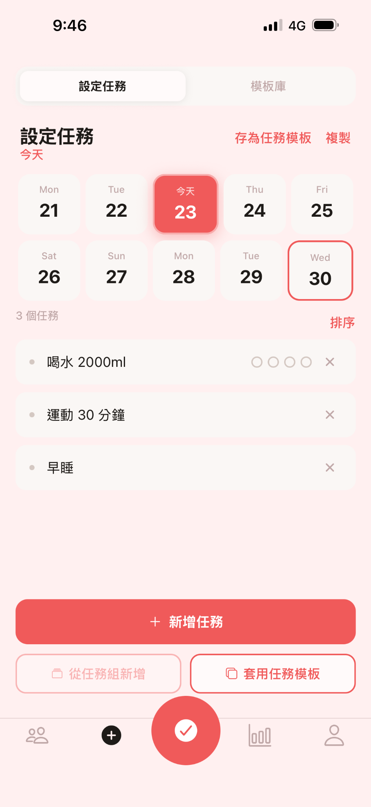
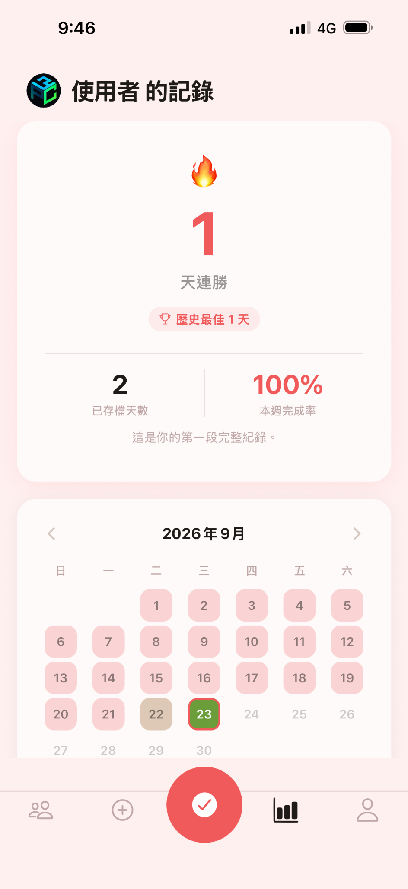
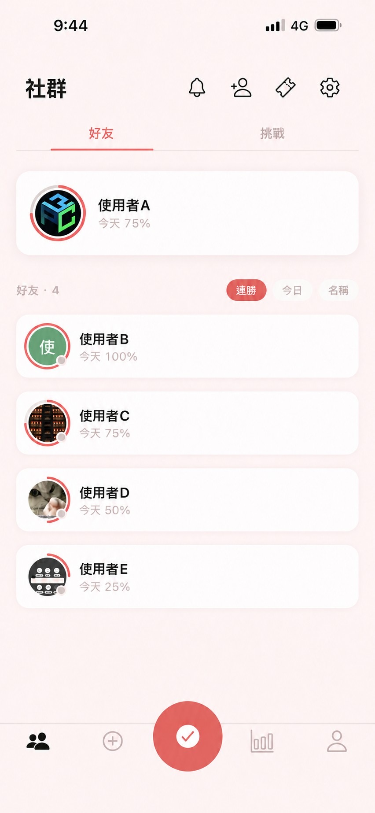

SAVELOG產品企劃 · AI 協作 · iOS 上架

LUCIEN CHIU. PERSONAL PORTFOLIO / 2026Lucien Chiu / 邱煌
產品規劃 × AI 協作 × 專案執行
主導習慣養成 App SAVELOG 從產品定位、功能規劃到 AI 協作開發與測試驗收，並完成 iOS 正式上架。具營造工程、半導體實驗室與 3D 製作背景，擅長將需求轉化為可執行方案，推進實際交付。
探索代表作品


3D MODELSELECTED PROJECTS / CASE STUDIES
三個實際案例，呈現產品交付、工程協調與實體製作。
01 / DIGITAL PRODUCT · PRODUCT PLANNING
從個人需求出發，完成一款真正上架的產品。
我以「降低開始行動與記錄的阻力」為核心，負責產品方向、功能取捨及測試驗收，透過 AI 協作開發，完成 iOS 上架。



為增加好友間的互動與監督，曾考慮內建聊天室，但訊息儲存、內容管理、檢舉與維護成本較高，因此改以有限制的預設互動句子保留熟人互動，並控制產品複雜度。
由我負責需求定義、功能規則與驗收判斷，透過 ChatGPT 分析方案、Claude Code 協作實作，並使用 CLAUDE.md 與 Skills 維護專案規範及重複工作流程。功能完成後進行本地操作測試，累積版本修改後再透過 TestFlight 進行真機驗證，最終完成 iOS 正式上架。
SCHEDULING · VENDOR COORDINATION
處理搬遷動線受限與拆除範圍問題。
獨立統籌約 300 坪銷售中心拆除工程，負責詢價發包、甘特圖排程與廠商協調。面對高價資產無法原路搬出的限制，與廠商調整拆除順序及吊運方案，最終於約一個月內完成工程，並經政府單位現場確認。
現場一座高價木製底座無法沿原路搬出。我先向前輩了解進場方式，再與廠商協調調整工序，待天花板拆除後以吊車移出。
因原先漏列紅磚牆拆除範圍，與廠商協商追加作業並完成清除；現場入口鐵門遭施工損壞後，也要求廠商完成修復。
照片為拆除前建築外觀，非本人建築設計作品。
3D MODELING · MAKING
讓造型需求成為可製作、可交付的方案。
運用 Rhino、Blender 處理 3D 模型，從尺寸、細節與拆件方式思考列印及後處理的可行性，並與製作夥伴協作。圖片展示數位模型與實體成品的對照。
先確認尺寸、造型、數量與交期；遇到不明確的需求，提供具體選項協助討論。
建模時考量細節強度、列印分件、組裝與後處理；對不可行的細節提出替代方案。
實際模型、列印與塗裝分工依個別作品確認；此處不將所有製程宣稱為獨立完成。
HOW I WORK
先確認目標、工期、使用情境與資源，而不是直接選擇工具。
在需求與實作成本之間取捨，明確定義交付範圍。
利用小規模測試、實機驗收或現場協調，發現問題再調整下一步。
EXPERIENCE
合夥人／產品企劃與 3D 製作
自主產品規劃、AI 協作交付、測試與 3D 客製需求轉化。
QEOD 實驗室技術員
晶片樣品切割、玻璃針轉移及精密樣品處理，依作業要求執行實驗室工作。
助理工程師
現場施工管理、工程採購發包、施工圖、排程與廠商協調。
設計助理
依主管需求調整建築圖面，協助模型製作及相關設計事務。
EDUCATION 銘傳大學 建築學系 · 2017—2023 · 畢業
SKILLS & TOOLS
需求定義、功能取捨、測試驗收
ChatGPT / Claude Code / Cursor建模、拆件規劃、製作可行性
Rhino / Blender / 3D 列印排程、詢價發包、資源協調
施工圖 / 甘特圖 / 現場管理CONTACT
目前尋求產品企劃、AI 應用及專案執行相關機會，歡迎透過 Email 聯繫。